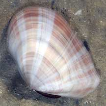
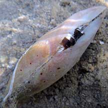

|
|
| bivalves text index | photo index |
| Phylum Mollusca > Class Bivalvia |
| Tellin
clams Family Tellinidae updated May 2020 Where seen? The clam or its empty shells are sometimes seen on some of our shores. Elsewhere, they are active burrowers in soft bottoms where they may be found in dense communities. What are tellin clams? Tellin clams belong to Family Tellinidae. Features: About 5cm. Tellin clams have a two-part shell. They are specialised for deep burrowing and generally have narrow thin shells, a wide blade-like foot and long siphons to reach the surface. Tellin clams also have the haemoglobin which give the animal a bright red color. The shells of some Tellin clam species can be quite colourful. What do they eat? Unlike other bivalves filter feed, Tellin clams use their long siphons like vacuum cleaners to suck up edible bits that settle on the bottom. They do this while their shells are safely tucked away deep in the ground, often in a horizontal position. Human uses: Some are collected for food and the shell trade. |
 Pulau Semakau, Mar 05 |
 Pulau Semakau, Apr 11 |
| Tellin clams on Singapore shores |
On wildsingapore
flickr
|
| Other sightings on Singapore shores |
| Family
Tellinidae recorded for Singapore from Tan Siong Kiat and Henrietta P. M. Woo, 2010 Preliminary Checklist of The Molluscs of Singapore. +Other additions (Singapore Biodiversity Record, etc)
|
Links
|